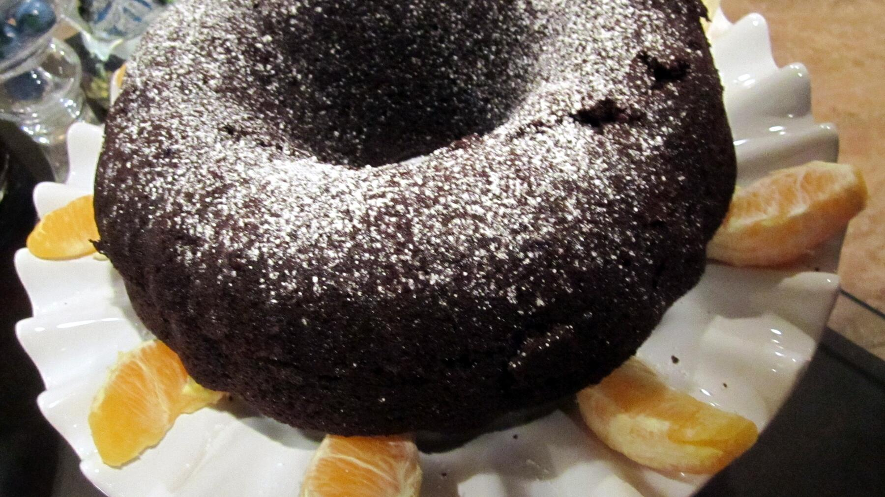

Zurück zur Übersicht
Möhren-Schoko-Kuchen
Saftiger Kakaokuchen mit fein geraspelten Möhren und gehackten Walnüssen, auch gut für Möhren, die nicht mehr ganz knackig sind. Eine Portion entspricht einem Stück.
- Zeit
- 1 Std. 35 Min.
- Schwierigkeit
- leicht
- Kategorie
- Süßgebäck
- Ernährung
- vegetarisch
Zutaten
Portionen
- 250 gMöhren
- 150 gWalnusskerne
- 180 gMehl
- 2 TLWeinstein-Backpulver
- 3 ELBackkakao
- 125 gButter, weich
- 1 PriseSalz
- 120 gZucker
- 1 PackungVanillezucker
- 3Eier (Größe M)
- 3 ELMilch
- 1 ELRapsöl für die Form
- 1 ELPuderzucker
Zubereitung
- Die Möhren waschen und fein raspeln. Die Walnüsse grob hacken. Mehl, Backpulver, Kakao und Walnüsse mischen.
- Butter, Salz, Zucker und Vanillezucker etwa 5 Minuten weißcremig rühren. Die Eier nacheinander zugeben und jeweils ½ Minute unterrühren. Mehlmischung und Milch unterrühren, dann die Möhren unterheben.
- Den Teig in eine gefettete Springform (Ø 24 cm) füllen. Im Backofen bei 160 °C Umluft (180 °C Ober-/Unterhitze) 35–40 Minuten backen, Stäbchenprobe machen.
- Den Kuchen lauwarm abkühlen lassen und mit Puderzucker bestäubt servieren.
Tipp: Statt Walnüssen gehen auch Haselnüsse oder Mandeln.